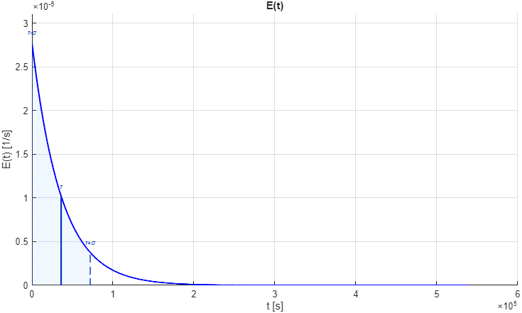
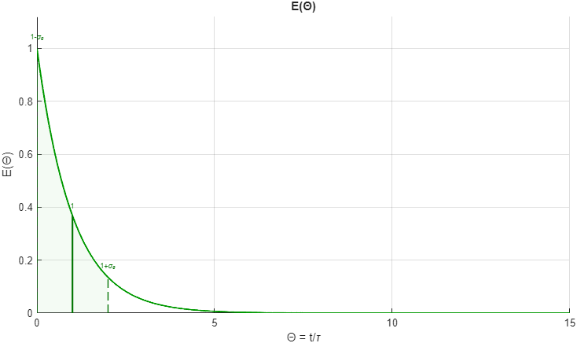

This appendix explains the meaning of the main RTD plots used by the app and how the overlays help you read them without changing the underlying RTD calculation.
E(t)
E(t) is the residence time distribution in dimensional time. The app marks the mean residence time and the characteristic spread band based on one standard deviation.

The shaded band and the vertical lines are visual guides only. They do not replace the real RTD curve.
A narrow and sharp curve indicates residence times clustered near the mean.
A broad curve indicates stronger spread in fluid age and therefore stronger macromixing effects.
The position of the main mass of the curve matters together with its width; the same variance can still look different depending on skewness.
F(t)
F(t) is the cumulative residence-time curve. It tells you how much of the tracer response has already emerged by a given time.
A steep rise means many fluid elements leave over a relatively narrow time window.
A slow tailing rise means a noticeable fraction of material experiences longer residence times.
In the app, F(t) is useful as a cumulative reading aid and as a consistency check alongside E(t).
Practical interpretation: if E(t) tells you where the age distribution is concentrated, F(t) tells you how quickly the reactor "delivers" that distribution cumulatively.
E(θ)
E(θ) shows the same RTD in normalized time, which makes it easier to compare shapes independently of the absolute residence time scale.

The normalized overlay highlights spread relative to θ = 1, not relative to an absolute time unit.
Use E(θ) when you want to compare two RTDs fairly even if they have different mean residence times.
If two dimensional RTDs look very different only because one is stretched in time, the normalized view helps separate scale effects from shape effects.
What the Overlay and the Main Moments Mean
The solid central line marks the mean position.
The dashed lines mark one standard deviation on both sides when that spread is meaningful.
The shaded area is a visual interval, not a fixed percentage of the fluid.
Quantity
Interpret it as...
τ
The characteristic mean residence time.
σ2
The spread of ages around the mean in dimensional time.
σθ2
The same spread seen after time normalization.
Skewness
How asymmetric the RTD is, especially whether it has a long tail.
Why this matters later: Tabs 2-5 do not use the overlay itself, but they do use the RTD shape and moments that the overlay is helping you interpret.
Good reading habit: never judge an RTD only from one scalar moment. Read the moments together with the curve shape, because two RTDs can share similar means and variances while still differing in asymmetry or tail behavior.
Why RTD Interpretation Changes Later Tabs
In Prediction Models, the RTD shape determines how Segregation and Maximum Mixedness are weighted over fluid age.